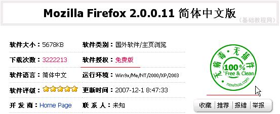

电脑操作基础
二十八、下载文件 返回
机子联网后，许多文件可以从网上下载，把文件从网上保存到自己的机子上，就叫下载，下面我们来看一个练习；
1、下载地址
1）有一些网站是专门提供下载的，比如天空、华军等等，进入“hao123网址之家”，找到下载分类，选择一个进入即可；
2）点击“华军软件”，进入华军软件园，首先选择你上网的地区和方式，一般有电信、网通、铁通等；
3）进入网站后，上面是网站菜单栏，有“软件分类、最近更新”等等，下面是一个软件搜索栏，如果知道文件名可以直接搜索；
2、查找软件
1）点击网站菜单“下载分类”，进入软件分类页面；
2）常见的压缩软件、汉字输入是系统软件、浏览器、QQ是网络工具软件，点击“主页浏览”进入浏览器下载；
3）在上面的免费软件推荐里，选择“Mozilla Firefox2.0.0.11简体..”点击进入，
Firefox是一款非IE内核浏览器，安全性较高，可以作为IE浏览器的一个补充；

4）注意仔细看清中间的软件授权是“免费版”，这样使用没有时间或其他限制，右边的安全性是绿色“无病毒、无插件”，从而放心下载；
5)向下滚动页面，找到有许多下载链接的位置，选择自己的地区进行下载，也可以找一些类似的尝试，看看哪个较快；
3、下载软件
1）瞄准链接，单击鼠标左键，如果安装有下载软件，即可自动进入下载，如果没有安装，出来一个下载对话框；
2）点击“保存”按钮，出来一个保存对话框，选择自己的文件夹，点“保存”按钮，即可开始下载；
3）然后出来下载进度条，里面有剩余时间、下载速度等等，如果太慢就取消了换一个下载地址；
4）下载完成后，出来一个提示，点“打开”可以直接运行，点“打开文件夹”可以进入保存的文件夹看看；
本节学习了在网页里下载文件的基本方法，如果你成功地完成了练习，请继续学习下一课内容；
本教程由86团学校TeliuTe制作|著作权所有
基础教程网：http://teliute.org/
美丽的校园……
转载和引用本站内容，请保留版权信息和本站链接。